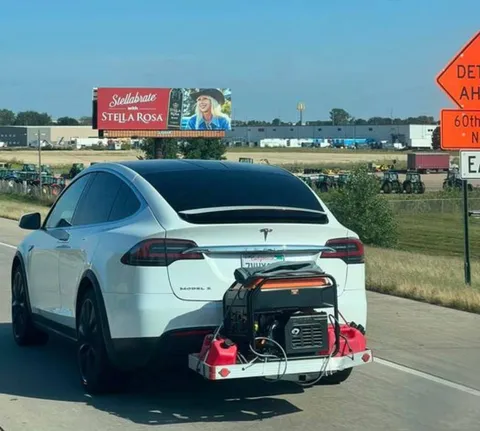

О работе обещал в отпуске не писать. Но про тачки то можно! Так вот, электрички. Не буду томить и хранить интригу: электрички - шляпа. Бессмысленная и неинтересная шляпа. Кто вообще это покупает и, главное, зачем?
Так, пока меня не подняли на вилы, оговорюсь. Если вы фанат электричек - окей, бог вам судья, в конце концов - надо покупать тачки по душе (да, аргумент "нравится" при выборе авто - один из самых важных). Если вы любите современные гаджеты и упиваетесь циферками эффективности - окей, такой вот вы человек. Просто не надо это называть автомобилями. Что же с ними не так?
Во-первых, электромобиль не может считаться крутой тачкой. Ну никак, это я вам как старый прожженый петрол-хэд говорю. Он эффективен, но не эффектен. Первые несколько раз вы еще кайфанете с разгона (меня катали на сусевене), но это просто аттракцион, который быстро наскучит. Машина должна реветь и дергаться. Машина должна быстро проходить повороты (электрички этого не могут хотя бы из-за веса). Машина должна дарить удовольствие от вождения, а не только от ускорения. Быстрая и тихая машина - это лифт. Вы когда-нибудь получали удовольсвие в лифте?
Во-вторых, они непрактичны. Предположим, вам все равно на удовольствие за рулем, у вас нет драйверских амбиций, вы нормальный человек, и вам нужна нормальная, хорошая машина. Но для этого еще не готовы технологии и инфраструктура. Запас хода пока маловат (до Питера на одном баке - тьфу, зарядке - не доедешь), заряжается он долго (быстрых зарядок у нас пренебрежимо мало). Электрические сети городов не подготовлены к массовым электромобилям - зачастую ты не можешь поставить себе зарядку, потому что не хватает капасити городских сетей. Да и ограничения на уровне нормативно-правовых актов не помогают - кажется, есть какой-то лимит на количество зарядных станций на паркингах.
В-третьих, я не согласен с утверждениями об экологичности электричек. Само электричество в своей массе все еще добывается из газа, мазута и угля, даже АЭС - штука немного сомнительная в плане отходов. Производство батареек - очень грязное, а их утилизация еще грязнее. Да и, на самом деле, основной вред окружающей среде от машин исходит уже вовсе не от двигателя (современные двигатели супер-чистые), а от твердых частиц в пыли от шин и тормозных колодок, и это никуда не денется.
В общем, себе я пока электричку брать не готов. Но против их появления не возражаю. Недавно был в Японии, и меня сильно удивило, насколько там тихо, даже в центре Токио. Наверняка, отчасти - за счет того, что львиная часть потока машин электрические и гибридные. Гуляя по центру, ты можешь говорить со своими спутниками, не повышая голоса. А у нас - попробуй перекричать поток машин на Садовом, например? Впрочем, подключаемый гибрид я попробовать готов, и в горизонте года это, скорее всего, случится. Благо заряжать можно и в офисе, у нас есть грядка зарядок на парковке. Буду заряжать и ворчать, ворчать и заряжать. Но чуть что - на одном баке до Питера доеду.
